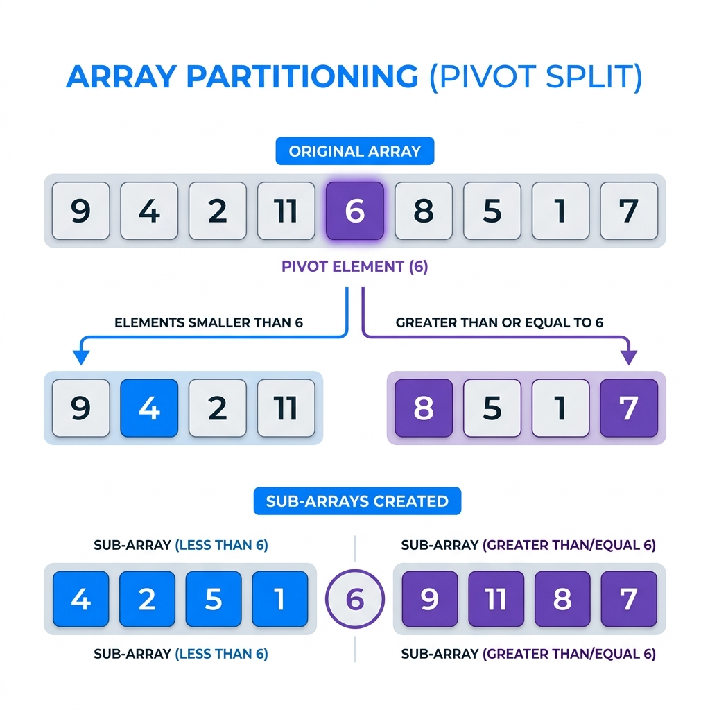
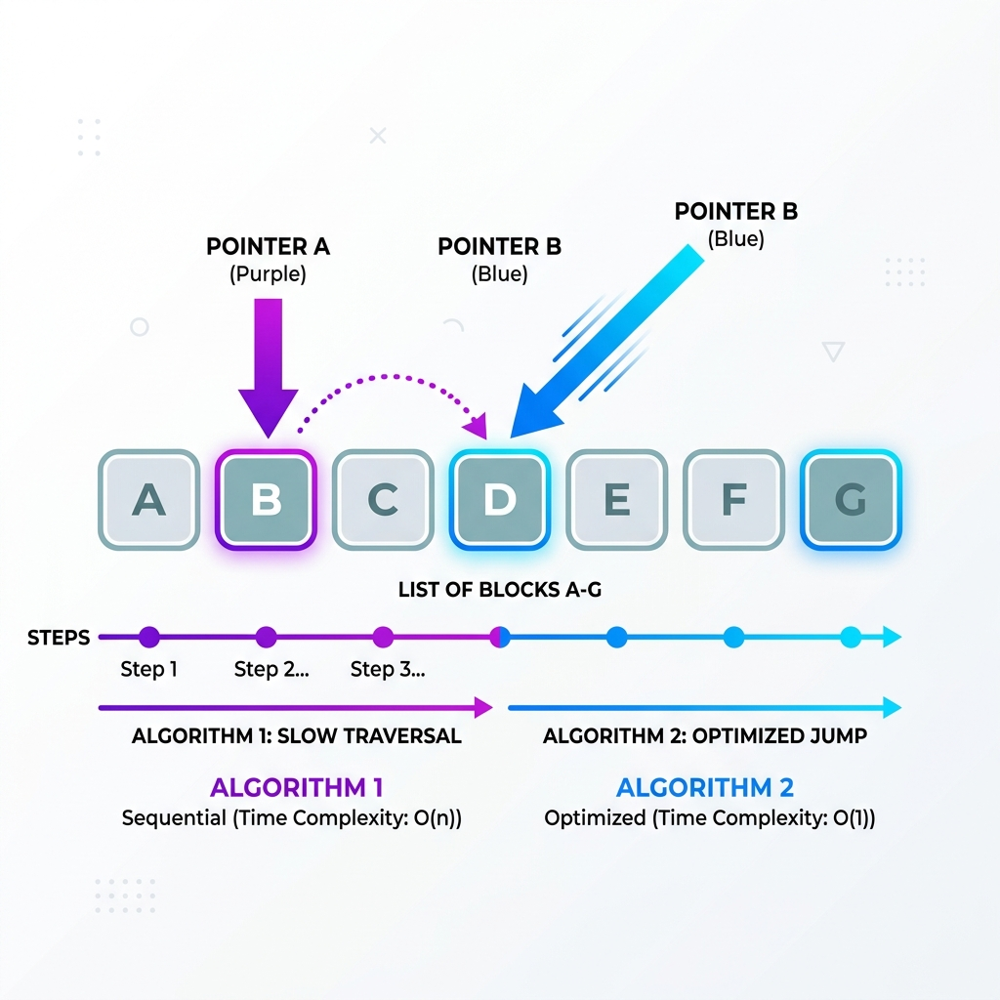
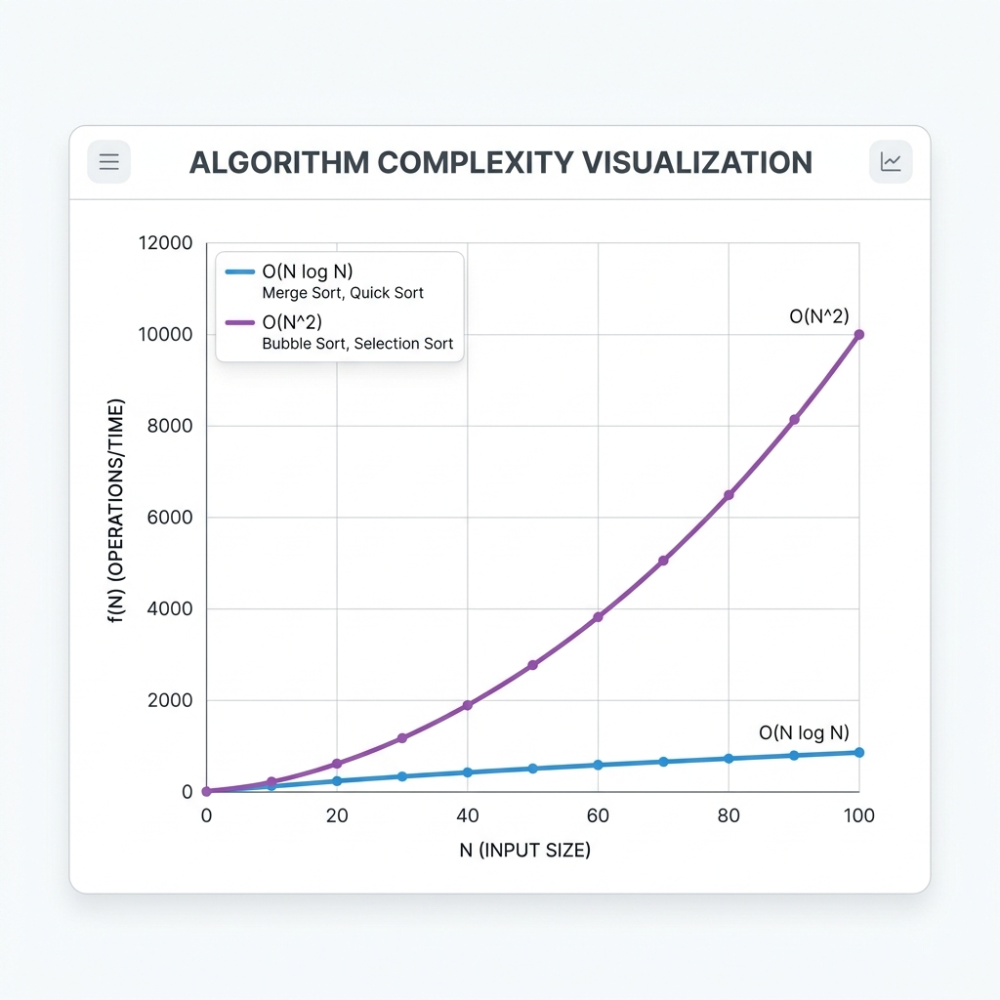

Khám phá lý thuyết, cơ chế phân hoạch và phân tích mã nguồn C++.
Hãy sử dụng phím Mũi Tên (Arrow keys) hoặc Vuốt (Swipe) để chuyển trang.
Tổng hợp những kiến thức cốt lõi về thuật toán Quick Sort mà nhóm đã nghiên cứu và làm cơ sở vững chắc để triển khai dự án lập trình thực tế.
Quick Sort là một thuật toán sắp xếp hiệu suất cao, hoạt động dựa trên chiến lược cực kỳ nổi tiếng: "Chia để trị" (Divide and Conquer).
Thuật toán không sắp xếp ngay lập tức mà luôn bắt đầu bằng việc chọn ra một phần tử làm mốc.
Phần tử mốc này gọi là Chốt (Pivot).
Tiến hành phân tách mảng ban đầu thành hai mảng con phân biệt dựa theo Pivot:

Cuối cùng, thuật toán liên tục gọi đệ quy chính nó để lặp lại quá trình trên các mảng con.
Quá trình lặp lại cho đến khi toàn bộ mảng được sắp xếp hoàn chỉnh (mảng con chỉ còn 1 phần tử).
Thay vì chỉ dùng một cách cố định, dự án tích hợp hai chiến lược phân hoạch kinh điển để linh hoạt so sánh.

Cơ chế "trái tim" của thuật toán thay đổi ra sao?
i đánh dấu ranh giới các phần tử nhỏ hơn Pivot.[l, r-1] bằng một vòng lặp.i.i.i (chạy từ trái sang) và j (chạy từ phải sang).
Đạt được khi Pivot chia mảng thành hai nửa tương đối bằng nhau ở mỗi tầng của cây đệ quy.
Xảy ra khi mảng đầu vào đã được sắp xếp sẵn (hoặc ngược lại) và thuật toán rơi vào tình huống phân hoạch bị lệch hoàn toàn (một bên 0 phần tử, bên kia n-1 phần tử).
Do thuật toán thao tác trực tiếp trên mảng gốc (in-place) và không cần mảng phụ. Bộ nhớ thiết yếu duy nhất là Ngăn xếp gọi hàm (Call Stack) để lưu vết đệ quy.
Chuyển đổi lý thuyết thành mã nguồn thực tế theo Hướng đối tượng (OOP), tích hợp linh hoạt 2 tùy chọn phân hoạch.
<bits/stdc++.h> để bao hàm nhanh. Xây dựng lớp QuickSortDemo để đóng gói hàm và biến.vector<int> kết hợp resize() thay vì mảng tĩnh. Cấp phát linh hoạt và tránh tràn bộ nhớ.Partition_Lomuto và partition_Hoare.printArray() sau mỗi lệnh swap() để in trực tiếp bước đổi chỗ trên Console.Chúng ta sẽ nhìn sâu vào lớp QuickSortDemo
#include <bits/stdc++.h>
using namespace std;
class QuickSortDemo {
private:
vector<int> arr;
// Hàm in mảng minh họa: [ 10, 20, 30 ]
void printArray() {
cout << "[ ";
for (int i = 0; i < arr.size(); i++) {
cout << arr[i] << (i < arr.size() - 1 ? ", " : "");
}
cout << " ]\n";
}
int Partition_Lomuto(int l, int r) {
int pivot = arr[r];
int i = l - 1;
cout << " -> Pivot: " << pivot << endl;
for (int j = l; j < r; j++) {
if (arr[j] <= pivot) {
++i;
swap(arr[i], arr[j]);
if (i != j) {
printArray(); // Step-by-step in ra
}
}
}
++i;
swap(arr[i], arr[r]); // Đưa pivot về giữa
return i;
}
void QuickSort_Lomuto(int l, int r) {
if (l >= r) return; // Điều kiện dừng đệ quy
cout << "\n[Step] Sorting " << l << " to " << r << endl;
// 1. Phân hoạch mảng
int p = Partition_Lomuto(l, r);
// 2. Đệ quy 2 nửa
QuickSort_Lomuto(l, p - 1);
QuickSort_Lomuto(p + 1, r);
}
int partition_Hoare(int l, int r) {
int pivot = arr[l];
int i = l - 1, j = r + 1;
while (1) {
do { ++i; } while (arr[i] < pivot);
do { --j; } while (arr[j] > pivot);
if (i < j) {
swap(arr[i], arr[j]);
printArray(); // In bước hoán đổi Hoare
} else {
return j; // Trả về ranh giới
}
}
}
public:
void inputData() {
int n; cin >> n;
arr.resize(n);
for (int i = 0; i < n; i++) {
cin >> arr[i];
}
}
void startSorting() {
int choice;
cout << "1. Lomuto\n2. Hoare\nChoice: ";
cin >> choice;
if (choice == 1) QuickSort_Lomuto(0, arr.size() - 1);
else QuickSort_Hoare(0, arr.size() - 1);
}
Khởi tạo Lớp Đối tượng và gọi quy trình một cách gọn gàng!
int main() {
QuickSortDemo qSortProject;
qSortProject.inputData();
qSortProject.startSorting();
qSortProject.displayFinalResult();
return 0;
}
Cảm ơn các bạn đã lắng nghe phần trình bày
vừa tìm hiểu lý thuyết, vừa minh họa bằng C++.
Nhóm thực hiện dự án